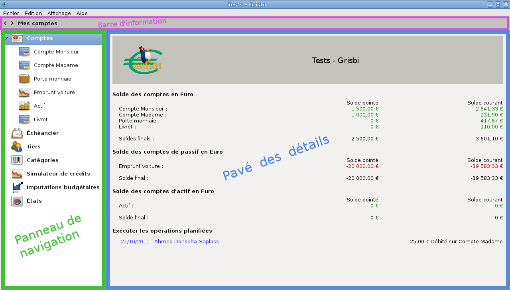

Chapitre 4 Accueil
Au démarrage de l’application, Grisbi affiche sa page
d’accueil.
C’est la page de démarrage du programme ; on peut y accéder à tout moment en cliquant sur l’onglet Comptes.
Vous pouvez afficher la fenêtre de Grisbi en plein écran par la touche de fonction <F11>, et revenir en arrière par la même touche.

| Figure 4.1: Page d’accueil |
Grisbi affiche toutes ses pages de la même manière : comme n’importe quel logiciel, il affiche une barre de menus qui donne accès à la plupart des fonctionnalités importantes de Grisbi, et aussi trois zones :
-
la barre d’information, sous la barre de menus ;
- le panneau de navigation ;
- le pavé des détails.
Ces trois zones, spécifiques à Grisbi, sont encadrées de couleurs dans la figure pour bien les identifier.
4.1 Barre d’information
La barre d’information affiche le nom de l’onglet courant affiché, et peut afficher, complètement à droite, certains soldes en rapport avec ce qui est sélectionné dans le pavé des détails.
Elle permet, en cliquant successivement sur l’un des deux petits triangles à sa gauche, de sélectionner l’un des onglets affichés dans le panneau de navigation : Comptes, Échéancier, Tiers, Simulateur de crédits, Catégories, Imputations budgétaires et États, et aussi l’un des sous-onglets des onglets Comptes et États s’ils sont déroulés dans le panneau de navigation.
Note : ces triangles peuvent être remplacés, en fonction du thème de l’environnement de bureau ou du gestionnaire de fenêtres que vous utilisez, par d’autres caractères tels que +, -, >, <, etc.
Le contenu de la sélection s’affiche dans le pavé des détails.
Ces fonctionnalités peuvent être utilisées à la place de celles du panneau de navigation lorsque sa largeur est réduite à zéro et que l’on n’y a pas accès directement.
4.2 Panneau de navigation
Le panneau de navigation affiche en caractères gras la liste des onglets : Comptes, Échéancier, Tiers, Simulateur de crédits, Catégories, Imputations budgétaires et États. En cliquant sur le petit triangle noir à gauche des onglets Comptes ou États, on peut dérouler ou enrouler la liste de leurs sous-onglets. Vous pouvez changer l’ordre des onglets et des sous-onglets en cliquant sur l’un d’eux et en le déplaçant plus haut ou plus bas dans la liste.
Note : ces triangles peuvent être remplacés, en fonction du thème de l’environnement de bureau ou du gestionnaire de fenêtres que vous utilisez, par d’autres caractères tels que +, -, >, <, etc.
Vous pouvez sélectionner un de ces onglets ou sous-onglets en cliquant sur son nom. Vous pouvez aussi déplacer la sélection dans cette liste d’onglets et de sous-onglets avec les touches du clavier <Flèche Haut>, <Flèche Bas>, <Page Haut> ou <Page Bas>, ou avec la molette de la souris.
Le contenu de la sélection s’affiche dans le pavé des détails.
On peut réduire ou agrandir la largeur du panneau de navigation en cliquant sur la fine barre verticale entre ce panneau et le pavé des détails, et en la déplaçant. Si la largeur du panneau a été réduite à zéro, ou agrandie au maximum de la largeur de la fenêtre de Grisbi, il faut retrouver cette barre, respectivement complètement à gauche ou à droite de la fenêtre, et la faire glisser à la place désirée.
Des menus contextuels, accessibles par un clic-droit de souris, sont disponibles sur les éléments de ce panneau et proposent les fonctions suivantes :
-
sur Comptes :
- sur un compte quelconque :
-
Nouveau compte,
- Supprimer ce compte ;
- sur Tiers :
-
Nouveau tiers,
- Supprimer le tiers sélectionné,
- Éditer le tiers sélectionné,
- Gérer les tiers,
- Supprimer les tiers inutilisés ;
- sur Catégories :
-
Nouvelle catégorie,
- Supprimer la catégorie sélectionnée,
- Editer la catégorie sélectionnée,
- Importer un fichier de catégories (.csgb),
- Exporter la liste des catégories (.csgb) ;
- sur Imputations budgétaires :
-
Nouvelle imputation budgétaire,
- Supprimer l’imputation sélectionnée,
- Editer l’imputation sélectionnée,
- Importer un fichier d’imputations budgétaires (.isgb),
- Exporter la liste des imputations budgétaires (.isgb) ;
- sur État : Nouvel état ;
- sur un état quelconque :
-
Nouvel état,
- Supprimer cet état.
4.3 Pavé des détails
Le pavé des détails affiche tous les détails sur les onglets ou sous-onglets sélectionnés par la barre d’information ou le panneau de navigation. C’est la zone de travail principale de Grisbi.
On peut réduire ou agrandir sa largeur en cliquant sur la fine barre verticale entre ce pavé et le panneau de navigation, et en la déplaçant. Si la largeur du pavé a été réduite à zéro ou agrandie au maximum de la largeur de la fenêtre de Grisbi, il faut retrouver cette barre, respectivement complètement à droite ou à gauche de la fenêtre, et la faire glisser à la place désirée.
4.3.1 Affichage de la page d’accueil
Pour afficher la page d’accueil, sélectionnez l’onglet Comptes ; le pavé des détails affiche, de haut en bas :
-
dans un pavé sur fond gris, l’icône Grisbi à gauche, et à droite un titre qui permet d’identifier sur quelle comptabilité vous travaillez actuellement, sous la forme «libellé - Grisbi» ; vous pouvez définir ce libellé, parmi trois possibilités, dans le menu Édition - Préférences (voir le paragraphe 22.2.3, Titres) :
-
l’Entité comptable : c’est le nom du domaine de comptabilité sur lequel vous travaillez, par exemple «Ma comptabilité » ou «Association », et que vous avez saisi à la création du fichier de comptes ; vous pouvez le modifier ici dans le champ Nom de l’entité comptable ; cela peut être utile si vous gérez plusieurs entités comptables,
- le Titulaire du compte : c’est le nom du titulaire (ou du propriétaire) du dernier compte consulté ; si le titulaire n’est pas renseigné dans les propriétés du compte, Grisbi affiche le nom de ce compte,
- le Nom du fichier de comptes : c’est le nom du fichier dans le répertoire courant, sous la forme nom_de__votre_fichier.gsb, et c’est le choix par défaut ;
- pour chaque devise séparément, pour tous les comptes et groupes de comptes, sous les libellés Solde rapproché et Solde courant :
- les alertes des opérations planifiées à échéance ou clôturées, avec leurs date, libellé et montant, selon les choix faits dans le menu Édition - Préférences (voir la section 22.1.6, Échéancier) ;
- la liste des comptes dont le solde est passé sous le Solde minimal autorisé ;
- la liste des comptes dont le solde est passé sous le Solde minimal voulu.
Note : pour les définitions du Solde minimal autorisé et du Solde minimal voulu, voir la section 7.3, Propriétés d’un compte.
Les libellés des comptes s’affichent en noir ; au passage du pointeur de la souris sur la ligne de l’un d’eux, cette couleur passe au gris.
Un solde supérieur au Solde minimal voulu s’affiche en vert foncé ; au passage du pointeur sur sa ligne, cette couleur passe au vert clair.
Un solde inférieur au Solde minimal voulu et supérieur au Solde minimal autorisé s’affiche en orange ; au passage du pointeur sur sa ligne, cette couleur passe à l’orange clair.
Un solde inférieur au Solde minimal autorisé s’affiche en rouge ; au passage du pointeur sur sa ligne, cette couleur passe au rouge clair.
Au passage du pointeur de la souris sur la ligne d’un compte, tout changement de couleur indique que si l’on clique (droit ou gauche) avec la souris, ce compte s’affiche, comme s’il avait été sélectionné avec la barre d’information ou le panneau de navigation ; il affiche alors la page qui contient la ligne d’opération affichant ce solde.
Un solde partiel, qui correspond à un groupe de comptes, s’affiche en noir. S’il est négatif, il peut s’afficher en rouge foncé, mais seulement si cela a été configuré ainsi (voir le paragraphe 22.1.8, Soldes partiels de la liste des comptes). Une ligne de solde partiel ne change pas de couleur au passage du pointeur de la souris dessus, car on ne peut pas afficher les opérations d’un groupe de comptes.
Vous pouvez configurer certains aspects de l’affichage de cette page d’accueil dans le menu Édition - Préférences ou dans l’onglet Propriétés de chaque compte :
-
Polices, logo et couleurs : section 22.2.1 ;
- Titres : section 22.2.3 ;
- Calcul des soldes : paragraphe 22.1.8 ;
- Soldes partiels de la liste des comptes : paragraphe 22.1.8 ;
- Alertes de l’échéancier : section 22.1.6 ;
- comptes sous le Solde minimal autorisé : section 7.3 ;
- comptes sous le Solde minimal voulu : section 7.3.
En particulier, si vous trouvez une erreur d’orthographe dans cette page, vous pourrez la corriger : voir le paragraphe 22.1.8, Pluriel de final !
Comme dans de nombreuses applications graphiques, la plupart des fonctionnalités importantes de Grisbi sont accessibles au moyen des menus de la barre de menus. Nous détaillons ici leurs fonctionnalités.
Ce menu comprend les fonctions suivantes :
-
Nouveau fichier de comptes : crée un nouveau fichier de comptes ; le fichier courant est donc fermé et un nouveau fichier vide est créé avec un compte vide (raccourci-clavier <Ctrl><N>), voir la section 3.3 ; à ne pas confondre avec la création d’un nouveau compte ;
- Ouvrir : ouvre un fichier de comptes (raccourci-clavier <Ctrl><O>) ;
- Derniers fichiers : affiche la liste des n derniers fichiers ouverts avec Grisbi (seulement s’il y en a eu plusieurs) ; ce nombre est configurable dans le menu Edition - Préférences, voir la section 22.1.1, Gestion des fichiers de compte ;
- Enregistrer : enregistre le fichier de comptes en cours (raccourci-clavier <Ctrl><S>) ;
- Enregistrer sous : ouvre un gestionnaire de fichiers pour enregistrer le fichier de comptes en cours avec le nom et à l’emplacement de votre choix ; Grisbi vous propose par défaut le répertoire courant, le nom du fichier de comptes en cours, avec l’extension .gsb ;
- Importer un fichier : démarre l’assistant d’importation de fichiers d’un autre logiciel ; voir la section 5.1.2 ;
- Exporter vers un fichier QIF/CSV : démarre l’assistant d’exportation de fichiers de compte ; voir la section 5.2 ;
- Créer une archive : démarre l’assistant de création d’archive ; voir la section 6.3.2 ;
- Exporter une archive vers un fichier GSB/QIF/CSV : démarre l’assistant d’exportation d’archive ; voir la section 6.3.7 ;
- Déboguer le fichier de compte : démarre l’assistant de débogage de ce fichier, qui va vous aider à chercher des incohérences dans votre fichier de comptes ; voir la section 23.1 ;
- Rendre anonyme le fichier de comptes : démarre l’assistant qui produit une copie anonymée de votre fichier de comptes ; ce fichier pourra être joint à un rapport de bogue ; voir la section 23.2 ;
- Rendre anonyme le fichier QIF : démarre l’assistant qui produit une copie anonymée de ce fichier ; ce fichier pourra être joint à un rapport de bogue ; voir la section 23.3 ;
- Mode de débogage : met Grisbi en mode de débogage, qui crée un fichier-journal des évènements ; voir la section 23.4 ;
- Fermer : ferme le fichier de comptes en cours ; Grisbi vous propose de l’enregistrer si ce n’est déjà fait (raccourci-clavier <Ctrl><W>) ;
- Quitter : ferme Grisbi ; Grisbi vous propose auparavant d’enregistrer le fichier de comptes, si ce n’est pas déjà fait (raccourci-clavier <Ctrl><Q>).
Ce menu comprend les fonctions suivantes :
-
Editer l’opération : voir la section 8.10, Modification d’une opération ;
- Nouvelle opération : voir la section 8.6, Saisie d’une nouvelle opération ;
- Supprimer une opération : voir la section 8.11, Suppression d’une opération ;
- Utiliser l’opération sélectionnée comme modèle : voir la section 8.12, Opération sélectionnée comme modèle ;
- Cloner l’opération : voir la section 8.13, Clonage d’une opération ;
- Convertir en opération planifiée : voir la section 8.14, Conversion d’une opération en opération planifiée ;
- Déplacer l’opération vers un autre compte : voir la section 8.15, Déplacement d’une opération vers un autre compte ;
- Nouveau compte : voir la section 7.4, Création d’un nouveau compte ;
- Supprimer le compte courant : voir la section 7.6, Suppression d’un compte ;
- Préférences : permet de configurer Grisbi ; voir le chapitre 22, Configuration de Grisbi.
Ce menu comprend les fonctions suivantes :
-
Montrer le formulaire de saisie d’opérations ;
- Montrer les opérations rapprochées (raccourci-clavier <Alt><R>) ;
- Montrer les lignes d’archives (raccourci-clavier <Altl><L>) ;
- Montrer les comptes clos ;
- Montrer une ligne par opération ;
- Montrer deux lignes par opération ;
- Montrer trois lignes par opération ;
- Montrer quatre lignes par opération ;
- Réinitialiser la largeur des colonnes ; permet de remettre les colonnes des listes d’opérations à leur largeur d’origine.
La plupart des choix de ce menu donnent accès à des sites Web. Pour que ces accès fonctionnent, il faut avoir indiqué à Grisbi le logiciel de navigation (ou navigateur) que vous souhaitez utiliser, dans le menu Édition - Préférences (voir la section 22.1.5, Programmes). Le menu Aide comprend les choix suivants :
-
Manuel : ouvre votre navigateur à la page «Manuel de l’Utilisateur de Grisbi » (raccourci-clavier <Ctrl><H>) ;
- Démarrage rapide : ouvre votre navigateur à la page «Démarrage Rapide de Grisbi » ;
- Traduction : ouvre votre navigateur à la page «Traduire Grisbi », pour vous inviter à nous aider à l’élargissement de l’internationalisation de Grisbi ;
- À propos de Grisbi : affiche la boîte d’information sur l’application : vous y trouverez des détails sur la version, le lien vers le site de Grisbi, les remerciements (contributeurs au projet) et la licence d’utilisation ;
- Site Web de Grisbi : ouvre votre navigateur à la page du site de Grisbi ;
- Signaler une anomalie : ouvre votre navigateur à la page du traqueur de bogues de Grisbi pour vous permettre de signaler un bogue que vous auriez découvert. Vous pouvez également suivre sur cette page l’évolution des corrections apportées aux bogues signalés ;
- Astuce du jour : ouvre une boîte de dialogue qui affiche une astuce d’utilisation, différente à chaque démarrage de Grisbi ; vous pouvez y afficher successivement toutes les astuces, et choisir ou non l’affichage de l’astuce du jour au démarrage de Grisbi. Pour supprimer ou réactiver l’astuce du jour, voir le paragraphe 22.2.2, Astuce du jour.
4.5 Raccourcis-clavier
Les raccourcis-clavier facilitent la saisie des données et la navigation dans les fenêtres de Grisbi, en évitant le recours systématique au déplacement et au clic de la souris. En utilisant ceux correspondant aux manipulations les plus courantes pour vous, vous améliorez votre ergonomie en limitant les mouvements importants de vos bras.
Grisbi dispose d’un certain nombre de raccourcis-clavier, présentés ici selon différents thèmes (voir aussi la section 2.8.2, Conventions typographiques du présent manuel).
4.5.1 Application et fichiers
-
Nouveau fichier de comptes : <Ctrl><N>
- Ouvrir un fichier de comptes : <Ctrl><O>
- Enregistrer le fichier de comptes : <Ctrl><S>
- Fermer le fichier de comptes : <Ctrl><W>
- Fermer Grisbi : <Ctrl><Q>
4.5.2 Panneau de navigation
-
Sélectionner un onglet ou un compte : <Flèche Haut>, <Flèche Bas>, <Page Haut> ou <Page Bas>
4.5.3 Liste des opérations et des opérations planifiées
-
Sélectionner une opération : <Entrée>
- Déplacer la sélection : <Flèche Haut> ou <Flèche Bas>
- Nouvelle opération : <Entrée> sur ligne vide, ou <Ctrl><T>
- Modifier une opération : <Entrée>
- Supprimer une opération : <Suppr> ;
- Pointer ou dépointer une opération : <Ctrl><P>
- Rapprocher ou dérapprocher une opération : <Ctrl><R>
- Montrer ou masquer les opérations rapprochées : <Alt><R>
- Montrer ou masquer les lignes d’archives : <Altl><L>
4.5.4 Formulaire de saisie
-
La touche <Entrée> est configurable : elle permet soit de se déplacer dans le formulaire de saisie, soit de valider l’entrée
- Se déplacer au champ suivant : <Tabulation> (selon votre choix de configuration)
- Annuler la saisie en cours : <Échap>
- Accepter l’auto-complètement : <Tabulation> ou <Entrée> (selon votre choix de configuration)
- Symbole de l’euro : <AltGr><e>
4.5.5 Listes déroulantes
-
Ouvrir une liste : <Page Bas> ou <Flèche bas>
- Se déplacer dans la liste : <Flèche haut>, <Flèche bas>, <Page Haut> ou <Page Bas>
- Valider un choix à l’intérieur d’une liste : <Entrée>
- Devises, exercices et modes de règlement :
-
ouvrir la liste : <Espace> ;
- se déplacer dans la liste : <Flèche Haut> ou <Flèche Bas> ;
- valider l’item de la liste : <Espace>.
4.5.6 Dates saisies au calendrier
-
Ouvre un calendrier (sur le champ de date) : <Ctrl><Entrée>
- Ferme le calendrier sans modifier la date : <Échap>
- Valide la date sélectionnée : <Entrée>
- Jour suivant ou précédent : <+> ou <->, <Flèche Droite> ou <Flèche Gauche>
- Semaine précédente ou suivante : <Flèche Haut> ou <Flèche Bas>
- Mois précédent ou suivant : <Page Haut> ou <Page Bas>
- Premier jour ou dernier jour du mois : <Début> ou <Fin>
4.5.7 Dates saisies au clavier
-
Jour suivant ou précédent : <+> ou <->
- Semaine précédente ou suivante : <Majuscule> <+> ou <Majuscule> <->
- Mois précédent ou suivant : <Page Haut> ou <Page Bas>
- Année précédente ou suivante : <Majuscule> <Page Haut> ou <Majuscule> <Page Bas>
- Valide la date sélectionnée <Entrée>
4.5.8 Tiers, catégories, imputations budgétaires, simulateur de crédits, données historiques et prévisions
-
Déplacer la sélection : <Flèche Haut>, <Flèche Bas>, <Page Haut> ou <Page Bas>
4.5.9 États et Configuration
-
Sélectionner un autre onglet : <Flèche Haut>, <Flèche Bas>, <Page Haut>, <Page Bas>
- Naviguer entre le panneau des onglets et les différentes options du panneau des réglages : <Tabulation>, <Flèche Haut>, <Flèche Bas>, <Flèche Gauche> et <Flèche Droit>
4.5.10 Aide
-
Ouvre votre navigateur à la page du Manuel de l’Utilisateur de Grisbi <Ctrl><H>